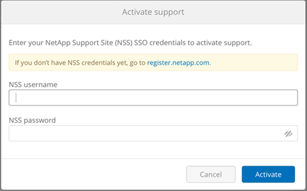
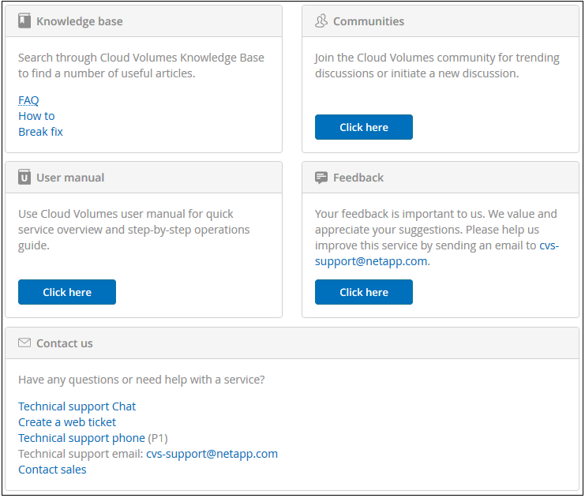

サポート利用資格のアクティブ化とサポートへのアクセス
寄稿者
AWS Marketplace への登録後すぐに Cloud Volumes Service にアクセスできるようになったら、サポート利用資格を有効にすることを強く推奨します。サポート利用資格をアクティブにすると、オンラインチャット、 Web チケット発行システム、および電話でテクニカルサポートにアクセスできます。
シリアル番号のアクティブ化と登録が完了するまで、デフォルトのサポートレベルはセルフサービスです。
サポート資格をアクティブ化しています
Cloud Volumes Service for AWS との初回サブスクリプションプロセスでは、 Cloud Volume インスタンスが生成するネットアップの 20 桁のシリアル番号は「 930 」から始まります。ネットアップのシリアル番号は、お客様の AWS アカウントに関連付けられた Cloud Volumes Service サブスクリプションです。サポート利用資格を有効にするには、ネットアップのシリアル番号を登録する必要があります。サポート登録には、次の 2 つのオプションがあります。
-
ネットアップの現在のお客様がネットアップサポートサイト（ NSS ）の SSO アカウントをお持ちの場合
-
ネットアップサポートサイト（ NSS ）の SSO アカウントをお持ちでない新しいネットアップのお客様
オプション 1 ：ネットアップの既存のサポートサイト（ NSS ）の SSO アカウントをお持ちのお客様
-
Cloud Volumes Service URL に移動するか、またはを使用してこのサービスにアクセスします "NetApp Cloud Central ポータル"。NetApp Cloud Central のクレデンシャルでログインします。
-
Cloud Volumes Service のユーザインターフェイス（ UI ）で Support を選択して、ネットアップのシリアル番号を表示します。

-
サポート ページで、サポートステータスが「未登録」と表示されていることを確認します。

サポートステータスとネットアップのシリアル番号が表示されない場合は、ブラウザページをリフレッシュしてください。
-
[ サポートの有効化 ] をクリックして、ネットアップシリアル番号を登録します。
-
NSS アカウントをお持ちの場合は、 Activate support ページに NSS のクレデンシャル（ユーザ名とパスワード）を入力し、 Activate をクリックして、ネットアップのシリアル番号のサポート資格を有効にします。

-
ネットアップの既存のお客様が NSS SSO クレデンシャルを持っていない場合は、にアクセスしてください "ネットアップサポート登録サイト" 最初にアカウントを作成してください。NSS のクレデンシャルに登録するには、ここに戻ってください。
-
ネットアップの新規のお客様の場合は、以下のオプション 2 の手順を参照してください。
-
ネットアップのシリアル番号が有効になると、 Support ページに「 Registered 」ステータスが表示されます。これは、サポート契約が有効になったことを示します。

これは、該当する Cloud Volumes Service シリアル番号に対するワンタイムサポート登録です。新しい Cloud Volumes Service サブスクリプションとそれ以降の新しいシリアル番号についても、サポートの有効化が必要です。サポート登録に関するご質問や問題については、 cvs-support@netapp.com までお問い合わせください。
オプション 2 ：ネットアップサポートサイト（ NSS ）の SSO アカウントがない新しいネットアップのお客様
-
に移動します "クラウドデータサービスサポート登録" ページで NSS アカウントを作成します。
-
[ I am not a registered NetApp Customer ] を選択すると、 [ 新規顧客登録 ] フォームが表示されます。

-
フォームに必要な情報を入力します。
-
名前と会社情報を入力します。
-
製品ラインとして Amazon Cloud Volumes Service を選択し、クラウドサービスプロバイダーとして Amazon Web Services を選択します。
-
次の 2 つのフィールドに、 Cloud Volumes Service サポート ページから ネットアップのシリアル番号 と AWS カスタマー ID を入力します。
-
[ 登録の送信 ] をクリックします。
-
-
送信された登録から確認の E メールが届きます。エラーが発生しない場合は、「登録が正常に送信されました」ページにリダイレクトされます。また、 1 時間以内に「お使いの製品はサポート対象になりました」という E メールも送信されます。
-
ネットアップの新規のお客様の場合は、サポートをアクティブにするためのネットアップサポートサイト（ NSS ）ユーザアカウントを作成し、テクニカルサポートのチャットや Web でのチケット発行をサポートポータルにアクセスできるようにする必要もあります。にアクセスします "ネットアップサポート登録サイト" このタスクを実行します。新しく登録した Cloud Volumes Service のシリアル番号を入力しておくと、プロセスを迅速に進めることができます。
これは、該当する Cloud Volumes Service シリアル番号に対するワンタイムサポート登録です。新しい Cloud Volumes Service サブスクリプションとそれ以降の新しいシリアル番号についても、サポートの有効化が必要です。サポート登録に関するご質問や問題については、 cvs-support@netapp.com までお問い合わせください。
サポート情報の入手方法
ネットアップでは、さまざまな方法で Cloud Volumes Service をサポートしています。ナレッジベース（ KB ）記事やネットアップコミュニティなど、幅広いセルフサポートオプションを 24 時間 365 日ご利用いただけます。AWS SaaS マーケットプレイスから購入した Cloud Volumes Service サブスクリプションには、チャット、 E メール、 Web チケット発行、電話によるリモートテクニカルサポートが含まれています。これらの非セルフサービスサポートオプションを使用するには、最初に各ネットアップシリアル番号のサポートを有効にする必要があります。チャットや Web でのチケット発行、ケース管理には、ネットアップサポートサイト（ NSS ）の SSO アカウントが必要です。
Cloud Volumes Service UI からサポートオプションにアクセスするには、メインメニューから サポート タブを選択します。利用可能なサポートオプションは、トライアルモードとサブスクリプションモードのどちらであるかによって異なります。

セルフサポート
これらのオプションはトライアルモードで利用でき、 24 時間 365 日無料で利用できます。
-
"ナレッジベース"このセクションのリンクを選択すると、ネットアップナレッジベースに移動し、 Cloud Volumes Service に関する記事、ハウツー、 FAQ 、またはトラブルシューティング情報を検索できます。
-
"ユーザーマニュアル"[ ここをクリック ] リンクを選択すると、 Cloud Volumes Service for AWS ドキュメントセンターに移動します。
-
"コミュニティ"[ ここをクリック ] リンクを選択すると、 Cloud Volumes Service コミュニティに移動し、同僚やエキスパートとつながることができます。
-
電子メール [ フィードバック ] セクションの [ ここをクリック ] リンクを選択すると、 cvs-support@netapp.com を通じてサポートする電子メールが開始されます。サービスについて一般的な質問をしたり、フィードバックや提案を行ったり、オンボーディングに関連する問題についてサポートを求めたりするのに最適な場所です。
サブスクリプションサポート
上記のセルフサポートオプションに加え、 Cloud Volumes Service の有料サブスクリプションがある場合は、ネットアップサポートエンジニアと協力して問題を解決できます。
Cloud Volumes Service のシリアル番号を有効にすると、次のいずれかの方法でネットアップテクニカルサポートリソースにアクセスできます。これらのサポートオプションを使用するには、アクティブな Cloud Volume サブスクリプションが必要です。
-
"チャット"これにより、サポートチケットも発行されます。
-
"サポートチケット"クラウドデータサービス > Cloud Volumes Service AWS の順に選択します
-
"電話"新しい問題を報告したり、既存のチケットについて電話で問い合わせたりすることができます。この方法は、 P1 または緊急アシスタンスに最適です。
をクリックして、セールスサポートをリクエストすることもできます "営業にお問い合わせください" リンク
Cloud Volumes Service のシリアル番号は、サポートメニューオプションからサービス内に表示できます。サービスへのアクセスで問題が発生し、ネットアップにシリアル番号を登録済みの場合は、 cvs-support@netapp.com までお問い合わせください。Cloud Volumes Service のシリアル番号の一覧は、ネットアップサポートサイトで次の方法で確認することもできます。
-
にログインします "mysupport.netapp.com"。
-
製品 > マイ製品メニュータブから製品ファミリー SaaS Cloud Volumes を選択して、登録済みのシリアル番号をすべて確認します。

 ドキュメントの変更をリクエスト
ドキュメントの変更をリクエスト GitHub で編集
GitHub で編集 寄稿者向けガイド
寄稿者向けガイド